π这个数字已经让几代人着迷了。它已经进入流行文化（既作为电影的标题，也作为古龙香水的名字）。小学生们通过比赛谁能记住π的更多位数字来庆祝π日。
3月14日是π日，因为日期写成3/14，π约为3.14。
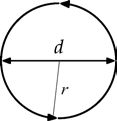
C=πd=2πr
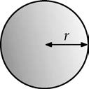
A=πr2
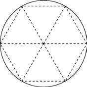
Pi是希腊字母的第十六个字母。它是一个圆的周长与直径的比值。换句话说，圆的周长总是其直径的π倍大；在C=πd中，C是圆的圆周，d是它的直径。这个关系也可以表示为C=2πr，其中r是圆的半径。Pi也用于通过公式
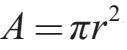
计算圆的面积，其中r是半径。π出现在球体的表面积和体积的公式中，也并不意外。如果球体的半径为r，则其表面积为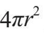
，体积为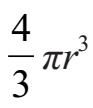
。这些几何公式并不能告诉我们π的数值。一个简单的论点表明，π大于3。绘制一个半径等于1的圆，并在圆内画出一个内接正六边形。然后将六边形分成六个等边三角形（如图所示）。因为圆的半径是1，所有三角形的边的长度也等于1。因此，六边形的周长是6。圆的周长（因为半径是1，等于2π）比六边形的周长稍大，所以我们得出2π＞6。
将两边除以2得出π＞3。我们可以看到，圆的周长并不比六边形的周长大太多，所以π不会比3大很多。
另一方面，我们可以在圆的外面画出一个外切正六边形，然后把这个六边形分成六个等边三角形。在这种情况下，运用几何知识可以得出每2 个等边三角形的边长以及六边形的边长都是
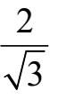
。（这是应用毕达哥拉斯定理的一个很好的练习——见答案[1]。）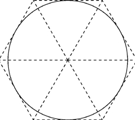
因此，外切六边形的周长是边长的6倍：
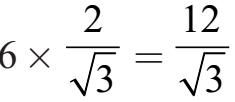
。要注意，圆的周长（2π）小于六12 边形的周长（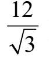
）。因此，
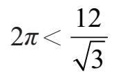
除以2，得
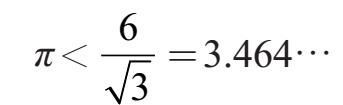
我们可以选择使用n比6大得多的正n边形，而非在一个半径为1的圆形上内接和外切一个正六边形。例如，如果我们取n=100，然后计算（使用一些三角学知识）内接和外切正n边形的周长，我们得到这些估值：
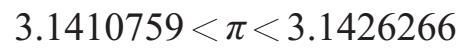
在极限情况下，随着内接和外切多边形的边数增长到无穷大，我们发现π的近似值是
π=3.14159265358979323846264338327950 2884…
π的“确切”值是什么？在第4章中，我们解释了
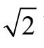
没有“确切”的值。也就是说，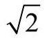
是无理数——它不能被表示成两个整数的比。同样，π也是无理数。有些小学生会学到π“等于”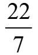
，但这只是一个近似值。π没有简单的表达式，但是下面的公式几乎符合要求：
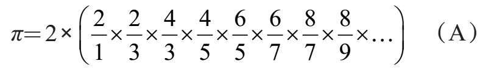
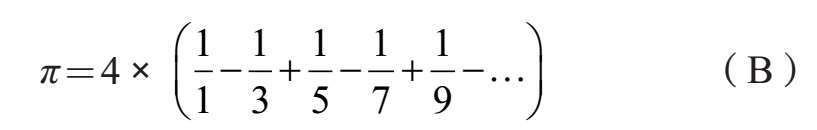
在这两种情况下，都需要计算到“无穷项”，这当然是不可行的。相反，可以在有限多个步骤之后停止计算以获得π的近似值。
公式（A）和（B）都没有给出计算π的实用方法。例如，如果我们通过计算公式（A）到
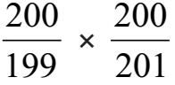
项，我们得到π≈3.134。同样，如果我分数
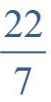
约等于3.14285 7。其实，π更好的近似值是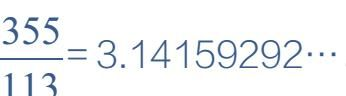
。们计算公式（B），停止在
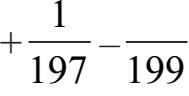
项，我们得到π≈3.13159。可以使用更复杂的方法快速准确地计算π的近似值。对于科学和工程学来说，π的近似值可以精确到小数点后30位，对于任何应用来说这都是足够的了。仅仅为了极大的快乐和挑战，数学家和计算机科学家们已经计算出了超过一万亿位的π。
有理数
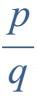
是方程qx–p=0的解。相反，方程ax+b=0（其中a和b是整数）的解是有理数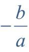
。π和
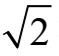
都是无理数，但我们可以对π做出意义更深远的断言：它是超越数。我们来看看这意味着什么。有理数是整数之比：如
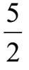
，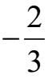
和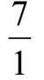
。另一种描述有理数的方法是：它们是形式为ax+b=0的方程的解，其中a和b是整数。例如，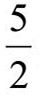
是方程2x–5=0的解。数字
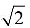
是无理数（见第4章），因此它不是ax+b=0形式的线性方程的解，其中a和b是整数。然而，它是二次方程ax2+bx+c=0的解，其中a，b和c是整数。具体而言，它是这个二次方程的解：x2–2=0。π呢？由于它是无理数，它不是线性方程ax+b=0（其中a和b是整数）的解。它是一个整系数二次方程ax2+bx+c=0的解吗？再次，答案是否定的。也许我们不得不借助一个强大的力量。
π是一个形式为ax3+bx2+cx+d=0整系数三次方程的解吗？再次，答案是否定的。四次？五次？任意次？
事实证明，π是超越的（transcendental）。这意味着π不是任何次的整系数多项式方程的解。π不是下述多项式方程的解。
anxn+an–1xn–1+···+a2x2+a1x+a0=0
（其中所有表示为ak的系数都是整数）。
π会意想不到地出现在数学中某些与圆甚至几何无关的部分。例如，π在斯特林阶乘逼近公式中（见[h]）神秘地出现。在这里，我们提出另一个涉及整数的基本属性的例子：互素（relative primality）。
我们说，如果两个正整数的唯一的公约数是1，那么它们被称为互素。
例如，思考数字15和28。它们的约数如下：
15的约数→1，3，5和15
28的约数→1，2，4，7，14和28
注意，它们唯一的公约数是1；因此我们说15和28互素。而21和35不是互素，因为两个数都可以被7整除。
假设我们掷两个骰子，出现的两个数字互素的概率是多少？
每个骰子显示的数字为1，2，3，4，5或6中的一个——具有相等的概率。无论第一个骰子数字是多少，第二个也有六种可能的结果。总的来说，有36种可能的结果：
（1，1）（1，2）（1，3）（1，4）（1，5）（1，6）
（2，1）（2，2）（2，3）（2，4）（2，5）（2，6）
（3，1）（3，2）（3，3）（3，4）（3，5）（3，6）
（4，1）（4，2）（4，3）（4，4）（4，5）（4，6）
（5，1）（5，2）（5，3）（5，4）（5，5）（5，6）
（6，1）（6，2）（6，3）（6，4）（6，5）（6，6）
所有这36个结果都具有相同的可能性。例如，我们可以计算出骰子上的数字和为7的概率。有6个结果的和为7：（1，6），（2，5），（3，4），（4，3），（5，2）和（6，1）。因此，两个数字相加为7的概率是
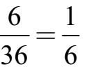
。我们再问一个类似的问题：这两个数字互素的概率是多少？下面的图表对于找到答案很有用。如果这两个数字互素，我们在图表的给定行和列中放置一个星星符号*。例如，在第2行第5列中有一个*，因为2和5是互素。但是，第4行第6列没有*，因为4和6不是互素。
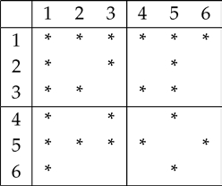
通过简单计数得出23个*，所以这两个数字互素的概率是
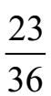
，等于0.638888…。让我们用二十个面的骰子重复这个练习。抛出两个这样的骰子，我们问：数字互素的概率是多少？解决办法是制作一个更大的图表！这个新的图表（显示在下一页）有20行20列，共400个单元格。当a和b互素时，第a行第b列中就有一颗星。对图表进行细致的检查可以发现255颗星，所以两颗骰子产生互素数字的概率是
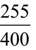
，相当于0.6375。可以在模型店购买有二十面的骰子。他们的形状是正二十面体。见第16章。
一般而言，我们可能会问，如果我们随机选取1和N之间的两个数字，它们互素的概率是多少？这可以由计算机通过思考1和N之间的每一对数字来计算：（1，1），（1，2），（1，3），以此类推。直到（N，N），并计算有多少对是互素的。我们用N2（可能互素的数字对）除以总数。当我们为N取不同值时，得到以下结果：
有一个有效的方法来确定第12章中呈现的是否有两个整数互素。
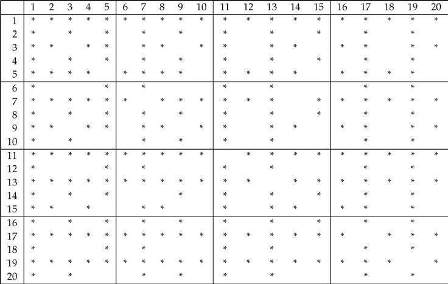
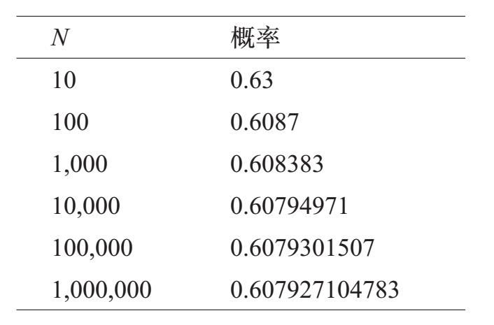
我们看到，随着N趋于无穷大，1和N之间的两个整数相对于总数的概率为接近0.6079的一个值。这个限制值是多少？竟然是：
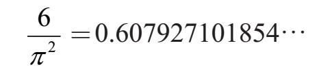
π：它不只是与圆有关！
[1]答案：
一个六边形与半径为1的圆外切。六边形被分成六个等边三角形。证明各三角形各边长——以及六角形的边长是
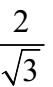
。将一个等边三角形划分为两个直角三角形，从圆心到六边形一边的中点绘制一个半径，如图。中点将三角形的边分成长度为x的两个部分（因此六边形的一边的长度是2x）。由于这六个三角形是等边的，所以这些三角形的所有三边的长度都是2x。
直角三角形的边长为1和x，斜边长度为2x。根据毕达哥拉斯定理[a]，
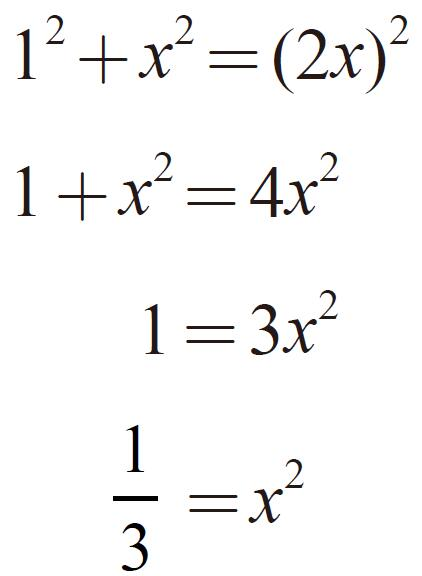
所以
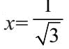
。由于六边形的周长是12x，所以我们得出结论：周长是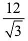
。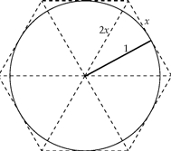